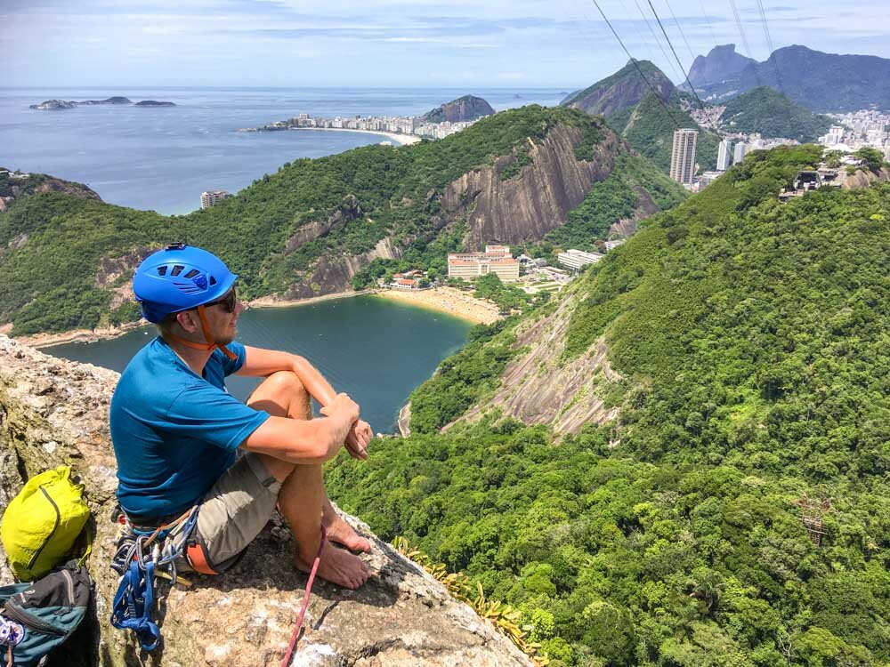
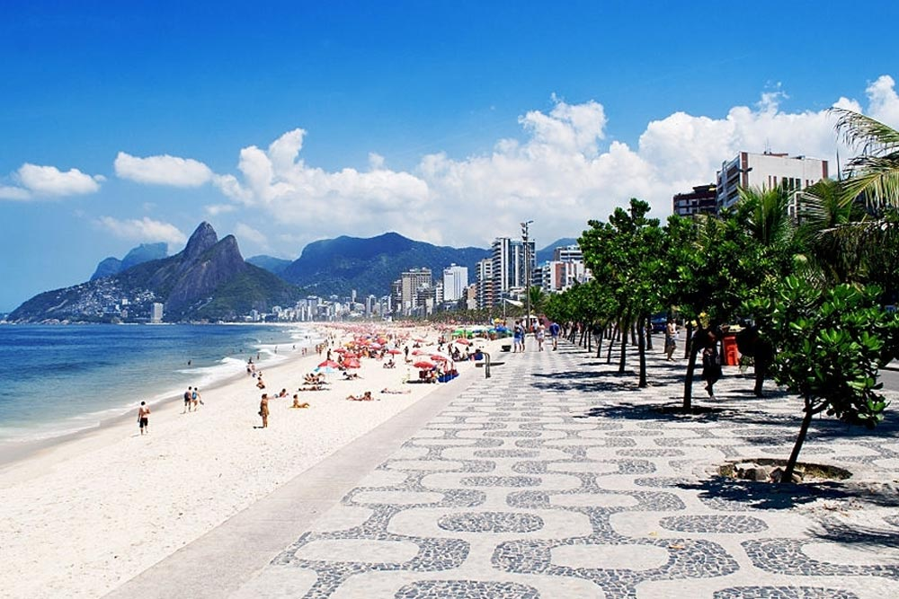
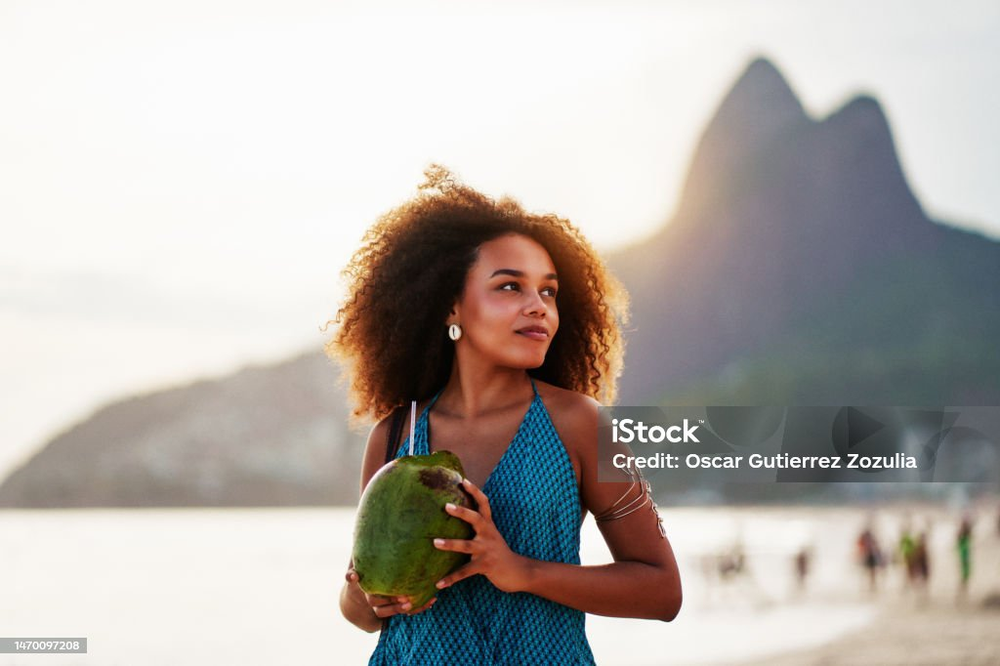

A INFOTRAVEL oferece os melhores pacotes para o Rio de Janeiro! Confira as opções e compre sua viagem!
Conhecendo a Cidade Carioca
Sol radiante, belas praias e um dos maiores carnavais do Brasil são os grandes destaques da cidade do Rio de Janeiro. O destino oferece pontos turísticos, mundialmente famosos, como Pão de Açúcar, o Corcovado, o Cristo Redentor, o Maracanã, o Jardim Botânico, os Arcos da Lapa, a Floresta da Tijuca e as praias de Copacabana, Ipanema e da Tijuca. Some a tudo isso à vida boêmia presente nos charmosos botequins do bairro da Lapa.Com tantas belezas naturais em meio a um cenário urbano, a capital já foi cenário para filmes norte-americanos, tornando-se cartão-postal nacional e internacional – não é à toa que ela é a principal entre as cidades do Rio de Janeiro. Garanta já sua visita à região e aproveite para curtir os passeios no Rio de Janeiro. Confira agora mesmo nossas opções de hotéis no Rio de Janeiro e descubra todas as vantagens de viajar com a maior operadora de viagens da América Latina.

Aventura na Natureza
Embarque em uma aventura inesquecível: O Pão de Açúcar possui mais de 100 vias de escalada, entre quais estão algumas das vias mais conhecidas e lendárias do Brasil! Escalar o Pão de Açúcar é inesquecível - além da qualidade da sua rocha e a beleza das suas vias, a montanha ainda proporciona vistas fantásticas para as belas paisagens do Rio de Janeiro.

Praia Destaque
O badalado bairro de Ipanema é famoso pela praia de mesmo nome que atrai uma multidão diversificada para tomar banhos de sol e fazer amizades. A rochosa península da Pedra do Arpoador é um ponto muito procurado por surfistas que também oferece trilhas e vistas do pôr do sol. Em direção ao centro, as ruas arborizadas da região contam com requintadas butiques, restaurantes sofisticados e bares descontraídos onde se ouve bossa nova

Ainda tem tempo!! Adquira já seu pacote de férias conosco e comece seu 2024 bem em terras cariocas
1. Explore sem Limites:
Não importa o destino dos seus sonhos, aceitamos todos os cartões de crédito para garantir que você tenha a liberdade de explorar o mundo sem limitações. Seja para uma escapada romântica, uma jornada de aventura ou um retiro tranquilo, estamos aqui para atender a todos os seus desejos de viagem.
2. Facilidade e Rapidez:
Na INFOTRAVEL, acreditamos que planejar sua viagem deve ser tão emocionante quanto a viagem em si. Com a aceitação de todos os cartões de crédito, oferecemos um processo de reserva fácil e rápido. Basta escolher seu destino, selecionar suas datas e pagar com o cartão de crédito de sua escolha para iniciar sua jornada.
3. Flexibilidade de Pagamento:
Compreendemos que cada viajante tem seu próprio ritmo financeiro. Ao aceitar todos os cartões de crédito, oferecemos a flexibilidade de escolher opções de pagamento que se ajustem ao seu orçamento. Parcelamento, pontos de recompensa e benefícios exclusivos esperam por você quando você reserva conosco.
4. Segurança e Tranquilidade:
Sua segurança é nossa prioridade. Ao aceitar todos os cartões de crédito, garantimos transações seguras e protegidas, permitindo que você desfrute da antecipação da viagem sem preocupações financeiras. Além disso, estamos aqui para oferecer suporte em todas as etapas da sua jornada.
5. Experiências Personalizadas:
Na INFOTRAVEL, entendemos que cada viagem é única. Com a aceitação de todos os cartões de crédito, podemos personalizar suas experiências, proporcionando momentos memoráveis que atendam às suas expectativas e desejos específicos.
Estamos ansiosos para ajudá-lo a criar memórias duradouras em destinos incríveis. Reserve sua próxima aventura conosco e descubra o mundo com a facilidade e a conveniência que só a INFOTRAVEL pode oferecer. Viaje conosco, onde cada jornada é uma promessa cumprida.